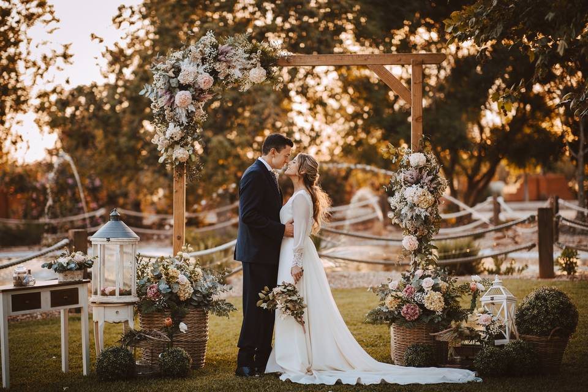

Acerca de
Cano DJ es un joven de 23 años originario de Córdoba, Veracruz. Actualmente es DJ residente en el popular antro Glow Night Club. Con su pasión por los beats electrónicos, ha logrado conquistar la escena nocturna, destacándose por su habilidad para conectar con la audiencia y crear experiencias únicas a través de la música.
Nuestros servicios
-

Bodas
-

XV Años
-
Bautizos
-

Cumpleaños